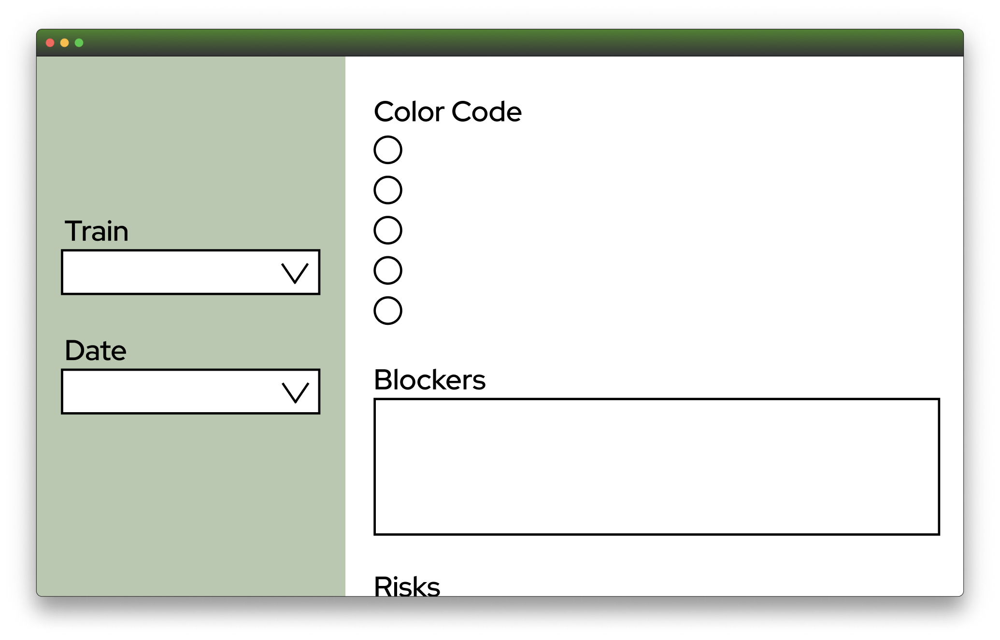
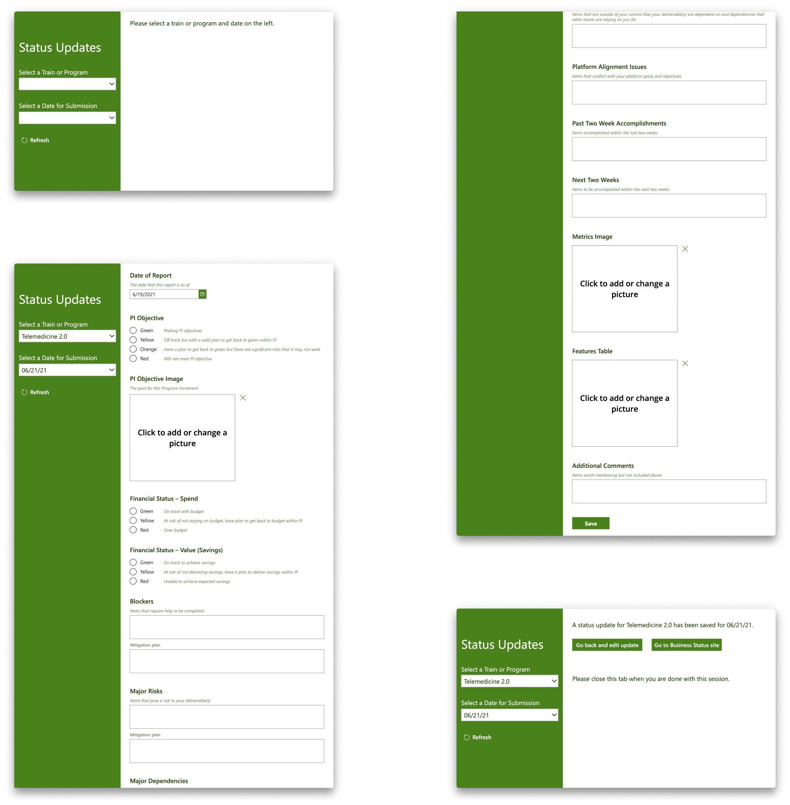
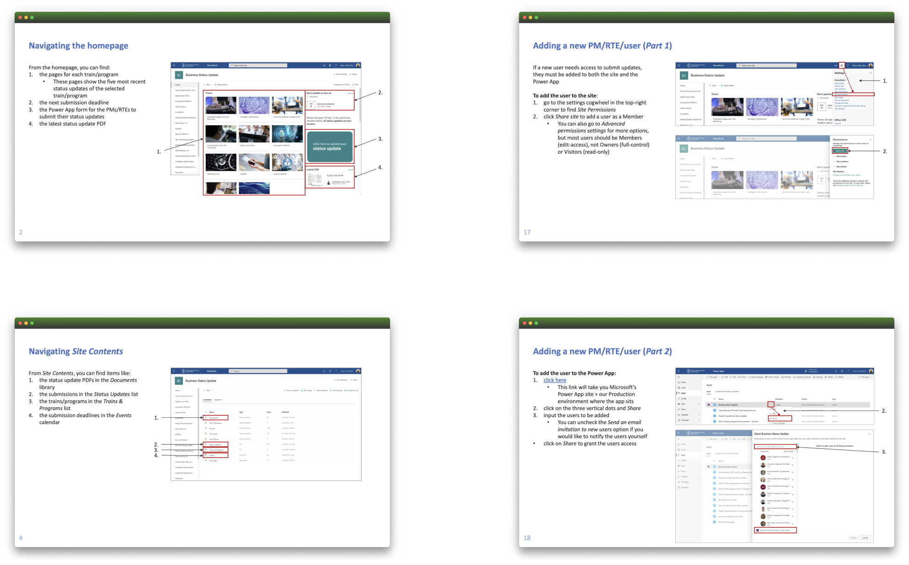
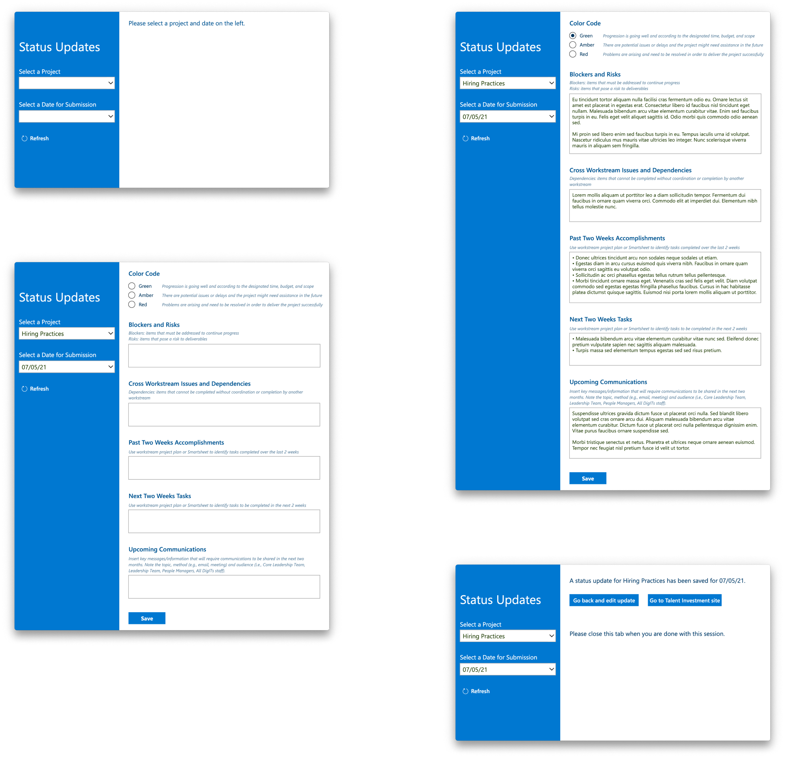
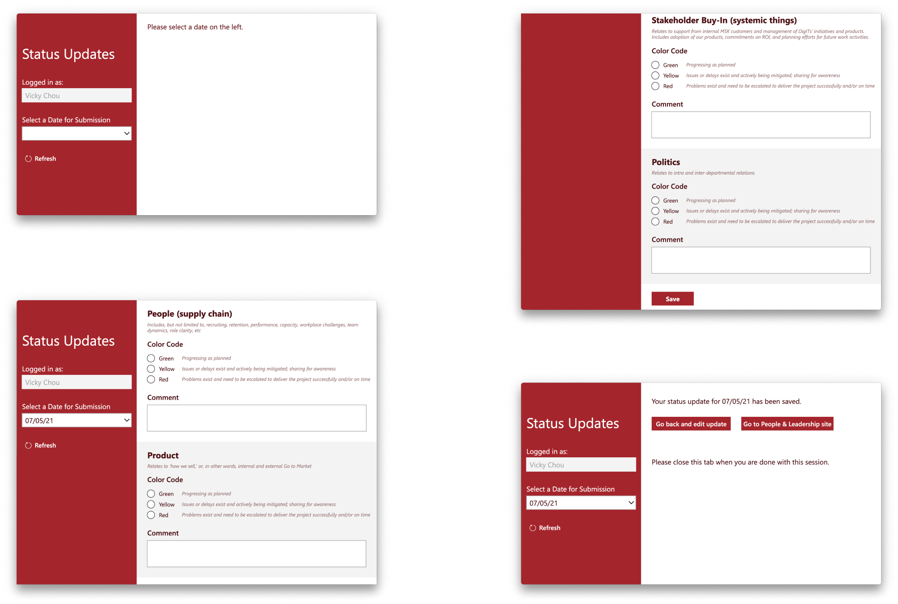

Citizen Developer, UI/UX Designer, Technical Writer
myself
August 2020 – July 2021
SharePoint Online, Power Platform
In the summer of 2020, the Chief Digital Officer (CDO)’s team contacted my Modern Workplace Management (MWM) team to see how their existing process for tracking 17 trains and programs can be improved. The CDO had established the trains and programs as part of MSKCC’s digital transformation and needed to get biweekly progress updates from the PMs and RTEs.
Following the successful go-live of what would be called the Business Status Update, the project coordinators requested two more status update forms, namely the Talent Investment Plan Status Update and the People & Leadership Status Update.
For context, I will first walk through the Business Status Update and then discuss the Talent Investment Plan Status Update and the People & Leadership Status Update.
At the time, an external platform was used to track the biweekly progress of the 17 trains and programs.
The process was two-fold: every two weeks, the PMs and/or RTEs would submit their status updates through the external platform while the project coordinators would manually download and compile the status updates from the external platform into a single PDF. The PDF would then be forwarded to key stakeholders including the Chief Digital Officer, the Director of Agile Transformation, and the Director of Software Engineering, and act as the agenda for the leadership meeting that occurred every other Friday morning.
This existing solution was disadvantageous, however, because:
Through several calls with a few key stakeholders for this project, I gathered more information about the submission process done by the PMs and RTEs as well as the compilation process done by the project coordinators. In doing so, I better understood how to design and implement my own solution for them.
First, I determined that I needed to allow the PMs and RTEs to make and save changes to their status updates up until the designated (but dynamic) date and time.
I knew that the saving feature was important because:
I also knew that the submission deadlines needed to be dynamic instead of hardcoded because they were not guaranteed to always occur every other Friday morning; when I asked for clarification on the day and time of the submission deadlines, I was told that all the leadership meetings would be planned in advance but could change if there was a holiday, a PI Planning, or an emergency.
Second, I determined that I needed to have a multitude of text fields, image fields, and radio buttons to track all the different information that the PMs and RTEs needed to provide to leadership. One of the key stakeholders for this project, the Director of Agile Transformation, had given me a list of information that the PMs and RTEs needed to submit. The list included items such as existing or upcoming issues, achieved or anticipated achievements, and the latest sprint metrics and PI features, some of which could be text or screenshots of charts and tables.
Next, I determined that I needed to automate the repetitive manual work that the project coordinators had to do every two weeks.
Specifically, for each submission deadline and leadership meeting, the project coordinators needed to:
And for each submission and leadership meeting, this process needed to be completed twice:
By automating some of the steps, then, I could reduce the amount of time and effort that the project coordinators needed to spend on this compilation process by four times a month.
In addition to the submission process and the compilation process, I also learned a bit about the leadership meetings. Specifically, the Director of Agile Transformation told me that the goal of the PDF was to initiate conversation amongst leadership and the PMs and RTEs regarding the progress of the trains and programs. This meant that the PMs and RTEs were not expected to write out every single piece of information in their status updates as long as they remembered to bring up major highlights during the meetings. I kept this in mind when designing the layout of my status update form.
With the information I gathered, I planned out some of the components that I needed to implement, including:
In conjunction with these components, then, there were also several databases that I needed to set up, including:
The database with all of the submission content primarily consisted of text and image columns for the different fields, though I did also add a number column used to sort the order of the submissions during the PDF compilation process.
I also quickly thought of a simple layout for the form that the PMs and RTEs would use to submit the status updates.
I wanted the name of the train or program and the date of the submission deadline to consistently show on the screen so that the PMs and RTEs would know exactly what team and meeting they were submitting for. I thought that this would be especially useful if a PM or RTE was in charge of multiple teams and/or was working on the submission early.
I also wanted the text fields to be relatively compact to discourage the PMs and RTEs from writing a lot. However, the textboxes do resize and do not enforce a character limit because this was not a strict requirement from the stakeholders.
With these two ideas in mind, I decided upon a ⅓ and ⅔ layout.
quick wireframe for the submission form
I faced several technical challenges while implementing both the form and the two automated workflows. For the form, I had to spend extra time enforcing the submission deadlines with timezone limitations in Power Platform as well as uploading the necessary charts and tables to the SharePoint database through additional Power Automate flows. For the automated workflows, I had to spend extra time checking the submission deadlines and structuring the submissions in the correct order and format.
After testing my work repeatedly both independently and collaboratively with my team members, however, I was able to successfully demonstrate and deliver my solutions to the project coordinators and the PMs and RTEs in the fall of 2020.
After my solution went live, there were several changes in how the leadership meetings were run and what the leadership team wanted to know about the progress of the trains and programs. As such, I occasionally had to update the questions and descriptions in the form as well as create additional workflows to accommodate the new needs of the project.
Below is the final form for the Business Status Update.
While my solution was live, I also received several emails and messages from the project coordinators asking for clarifications on how they can better manage the solution on their own ends. After several calls with the project coordinators where they repeatedly asked similar questions, it was clear that my solution was confusing because of the multitude of platforms I used: Power App, Power Automate, and SharePoint Online. I thus took the initiative to create an end-user guide for the project coordinators to better navigate the different platforms to view and manage different pieces of data.
When creating the end-user guide, I made sure to break down the central SharePoint Online site because the site was where all of the relevant data was stored. Then, I made sure to include instructions to specific questions they had reached out to me about, such as extending the submission deadline, adding new PMs and RTEs to the form, and re-running the workflows.
Below are a few screenshots of the end-user guide I created.
I did not find a need to create end-user guides for the PMs and RTEs or for the leadership team because unlike the project coordinators who needed to manage information in three different platforms, the PMs and RTEs were only users of the Power App form while the leadership team were only readers of the PDF.
After the Business Status Update went live, the project coordinators received positive feedback on the submission process and interface and were asked to implement the same solution for other submission processes. One of these was the Talent Investment Plan Status Update, which enabled leadership to track the progress of projects pertaining to people and talent that were initiated to support the Digital Informatics & Technology Solutions (DigITs) team.
The main difference between this and the Business Status Update was the questions asked in the submission form, so I was able to largely duplicate my previous implementation.
The other project was for the People & Leadership Status Update, which was intended to track information about the “People”, “Product”, “Stakeholder Buy-In” (previously known as “Process”), and “Politics” of teams in DigITs. Information included any blockers in hiring for a position or any offers that have been made.
Like the Talent Investment Plan Status Update, the People & Leadership Status Update was also different from the Business Status Update in terms of the questions that were asked in the submission form. However, the People & Leadership Status Update had duplicate questions for each of the four categories, so I modified the design of the form a little by alternating the background color to distinguish between the different categories.
The People & Leadership Status Update was also unique because the users of the form were individuals rather than teams submitting status updates. The individuals also had to submit their own status updates and could not have the task delegated to another person. As such, I modified the submitter field on the left such that it became disabled and auto-populated with the logged-in user’s name.
It was both overwhelming and rewarding to work for a lot of high-profile stakeholders within the company and play a role, no matter how small, in MSK’s digital transformation. The technical limitations and challenges of the platforms I used as well as the lack of user feedback I was able to gather had nothing against the difficulty of meeting clients’ constantly changing needs. I received constructive criticism throughout the project and slowly learned how to say “not now” and even “no” to the project coordinators and key stakeholders; the ability to take criticism and push back has proved to be my most valuable profit from this project.
After the Chief Digital Officer left MSK in the middle of 2021, all three of these status update projects were sunset. It felt bittersweet to leave alongside some of my most rewarding works at MSK.